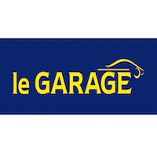
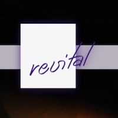
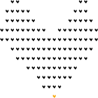

Expérience professionnelle
-

2013-2016
Garage Balcon du Jura à Ste-Croix
J'ai été dans ce garage pour faire du classage de facture au début. Au bout d'un certain temps, en plus de classer les factures, j'ai commencé à nettoyer l'intérieur et l'extérieur des voitures.
-

2015-2016
Court Sàrl à Ste-Croix
Dans cet atelier de micromécanique, j'avais pour but de nettoyer les sols de deux ateliers et d’enlever le surplus de matière qui restaient sur les machines mécaniques.
-

Février 2016 - à ce jour
Revital Center au Rasses
Revital est un centre de remise en forme, essentiellement pour femme. Mon but dans cette entreprise est d’aider les clients avec leurs bagages. Je dois également nettoyer les sols et contrôler les extérieurs de la maison. Je m'occupe également d'aller à la déchetterie et d'amener les colis à la poste. Je donne aussi un coup de main à mes collègues en allant arroser les plantes sur les balcons et donner un coup de balaye sur ces derniers.
-
Février 2017 - août 2017
Stagiaire IT au Décanat de l'Université de Lausanne
Mon but durant ces 7 mois de stage ont été, d'installer et de configurer des ordinateurs sous Windows et OS X, faire du support informatique au niveau 1 et 2, à participer au projet refonte de l'interface graphique du système de réservation de salles de l'UNIL et pour finir être responsable de commandes informatiques.
-

Septembre 2017 - janvier 2018
Stagiaire IT au gymnase de Renens
Mes 5 derniers mois de stage je les ai effectués au gymnase de Renens mais je devais également aller au gymnase provence. J'ai été chargé des missions suivantes, support aux utilisateurs pour quelconques problèmes intervenant dans les salles de cours, la configuration et le déploiement d’un système « client léger » pour des connexions VDI, la configuration et le déploiement d’images système et de logiciels dans un environnement macOS, l’installation et configuration de postes macOS fixes et portables, la création et la gestion des comptes Active Directory et dans un Open Directory au gymnase de Renens le premier et au gymnase provence pour le second, résolution de pannes informatiques et changement du matériel défectueux. Pour finir, le développement du design d’une page web interne aux gymnases.
-
Fin !